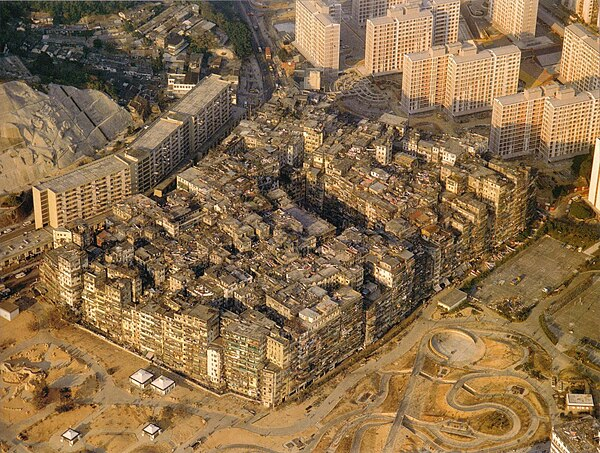
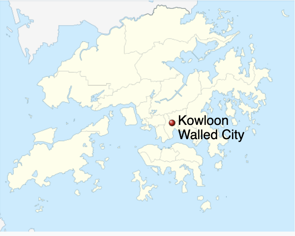

Kowloon Walled City
Densest city (that was on Earth): Kowloon Walled City (YT)
Stats about Kowloon:
- Area: 2.6 Ha
- Population: 50k
Density: 1.9M / km2

Figure 1: Kowloon Walled City - Aerial View
History:
- It was a city near the region controlled by UK,
- Then after the Opium Wars, the island it was in and the surrounding islands became Hong Kong, however a special clause in the treaty made it a part of China. So, it's a Chinese city inside UK's colony: Hong Kong
- This made jurisdiction weak within the city because Hong Kong police couldn't go there full time. Only occasional raids were done.
- So the city became the go to place for
- Criminals
- People who fled mainland China
- Dentist from China: Because Chinese dentist license didn't work under UK's laws in Hong Kong
- Eventually it was demolished before 1999's handover
- Both government decided on the demolition on

Figure 2: Kowloon Walled City - Map